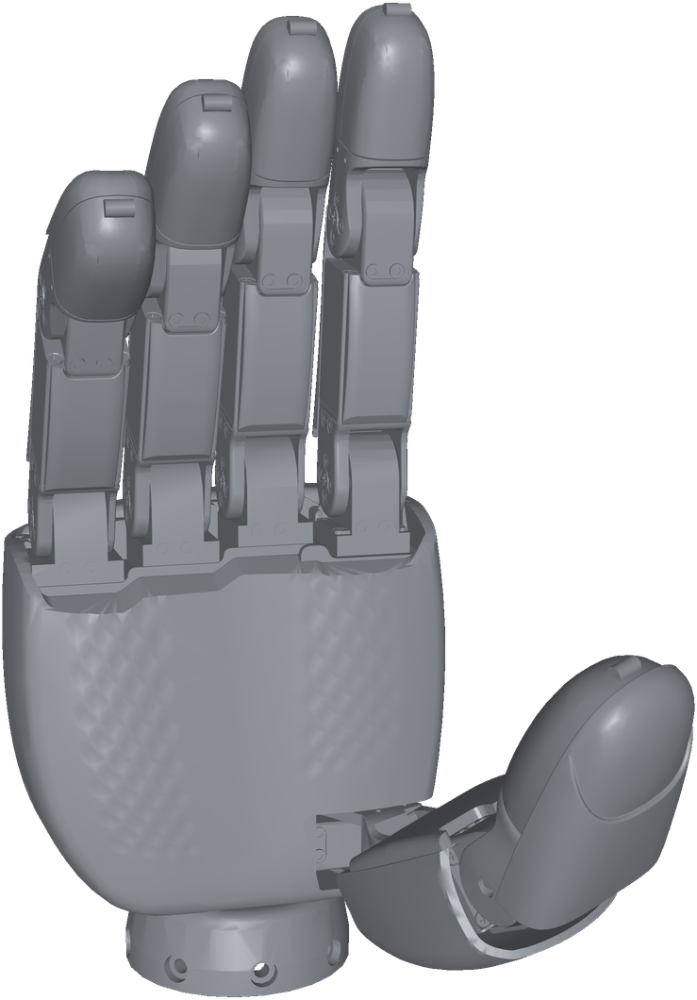
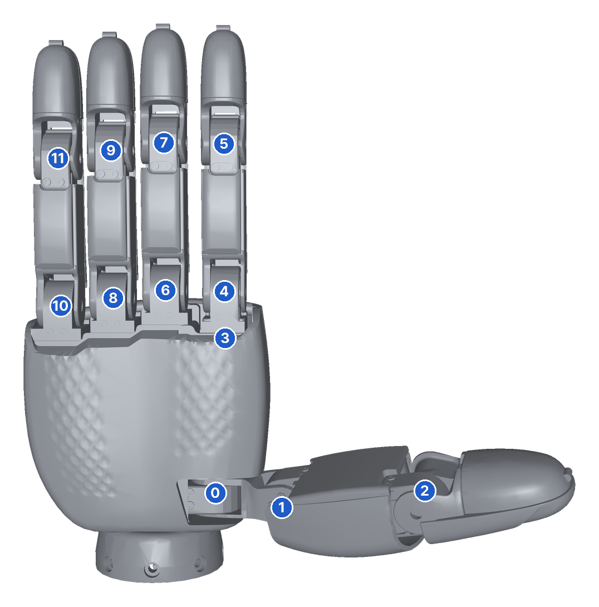
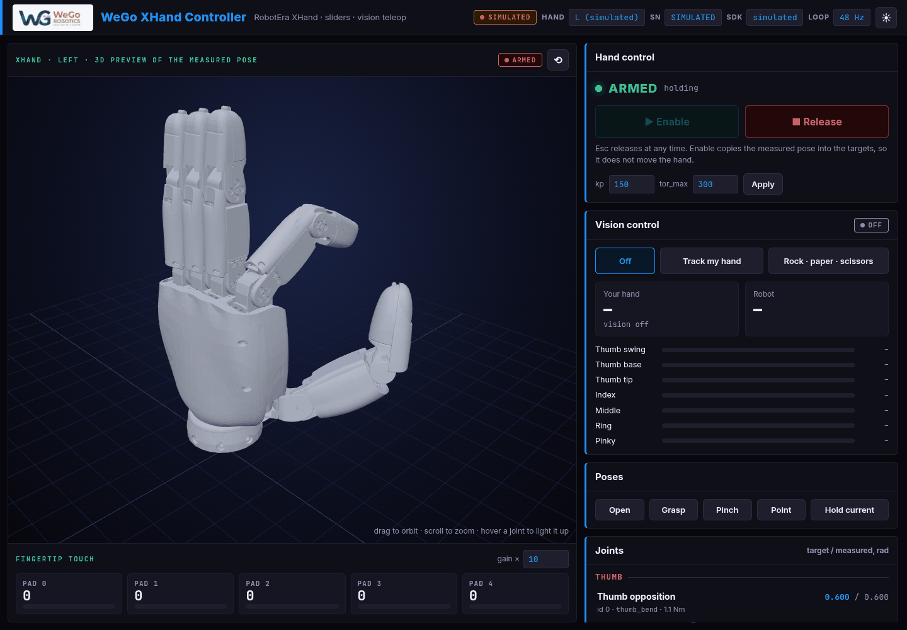
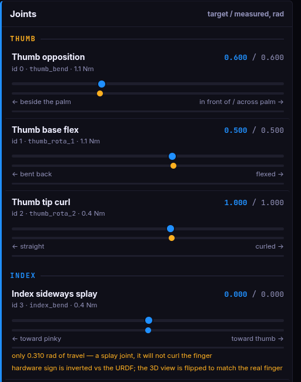

ROBOTERA XHand1
다관절 손
RS485-USB 연결과 Python SDK 설치, WeGo XHand Controller로 손 움직이기, SDK 프로그래밍, WeGo가 실제 손에서 측정한 관절 · 토크 · 통신 결과와 문제 해결을 한 권에 모았습니다.

이 설명서에 대하여
| 로봇 | ROBOTERA XHand1 다관절 손 (2L32 왼손 · 2R32 오른손, 능동 12자유도) |
| 근거 문서 | ROBOTERA X-Hand 1 Product Manual V1.0 (2024-10-15, 34쪽; 사양 몇 가지만 출처를 밝혀 인용) ·
ROBOTERA 공개 URDF github.com/roboterax/models (STAR1 휴머노이드, 양손 XHand1 포함, BSD-3-Clause) ·
ROBOTERA SDK xhand_controller 1.1.7의 헤더(xhand_control.hpp · data_type.hpp), 예제 xhand_control_example.py, 설치 안내(README) |
| 실측 자료 | WeGo XHand 시험 기록 (2026-09-18, 왼손 1대, 관절 펌웨어 1.1.0, RS485-USB 연결) · WeGo XHand Controller 사용 안내 (2026-11-05판, 시뮬레이션 모드로 시험) |
| 소프트웨어 | Ubuntu 22.04 · Python 3.10 · xhand_controller 1.1.7 (SDK 1.4.2) · WeGo XHand Controller 2026-11-05판 |
| 판 | 한국어판 · 2026.11.18 |
| 문의 | go.support@wego-robotics.com |
ROBOTERA 제품 설명서는 ROBOTERA의 허가 없이 설명서와 그 안의 글 · 그림 · 사진을 출판 · 복제 · 전송 · 배포하지 못하게 합니다. 그래서 이 책은 그 설명서를 옮기지 않고, WeGo가 실제 손으로 시험한 내용과 SDK · URDF에서 확인한 내용으로 썼습니다. 사양 몇 가지는 출처를 밝혀 인용했습니다. 커넥터 핀 정의와 통신 프로토콜(RS485 · EtherCAT 프레임)은 ROBOTERA 설명서 원문을 보십시오. 원문은 ROBOTERA나 제품 공급처에 요청하십시오. 공개 사본: cdn.robotshop.com/media/E/ERA/RB-Era-01/pdf/x-hand-product-manual-1-0.pdf (ROBOTERA 웹사이트 www.robotera.com).
출처 표시: 문서 ROBOTERA 제품 설명서, SDK SDK 헤더 · 예제 · URDF에서 확인, 실측 WeGo가 실제 손으로 확인. 실측값은 WeGo의 시험 장비 한 대에서 나온 값이며, 손마다 다를 수 있습니다.
© WeGo Robotics. XHAND는 Beijing RobotEra Technology Co., Ltd.(ROBOTERA)의 제품입니다. 표지와 1장 관절 그림의 XHand1 이미지는 ROBOTERA가 공개한 STAR1 URDF의 손 메시(github.com/roboterax/models, Copyright (c) 2024, RobotEra, BSD 3-Clause License)를 MuJoCo로 렌더링한 것이며, ROBOTERA가 이 책을 보증하는 것은 아닙니다. 4장 그림은 WeGo XHand Controller의 화면입니다 (화면 속 3D 손도 같은 ROBOTERA 메시).
목차
- 01제품 개요
- 02중요 안전 수칙
- 03연결과 SDK 설치
- 04WeGo XHand Controller
- 05Python SDK
- 06WeGo 실측 결과
- 07문제 해결
- 부록빠른 참조
제품 개요
XHand1은 ROBOTERA가 만든 다섯 손가락 다관절 손(이하 '손')입니다. 관절 12개마다 모터와 기어가 있어 관절을 하나씩 따로 움직이고, 손가락 끝마다 3차원 힘을 재는 촉각 센서가 있습니다. 개발 PC와는 RS485 또는 EtherCAT으로 통신합니다.
주요 사양 문서
ROBOTERA 제품 설명서 V1.0의 사양 가운데 설치와 운용에 필요한 값만 옮겼습니다. 촉각 센서 줄은 SDK 자료형에서 확인한 값입니다.
| 항목 | 값 |
|---|---|
| 제품 모델 | 2L32 (왼손) · 2R32 (오른손) |
| 능동 자유도 | 12 (엄지 3 · 검지 3 · 가운뎃손가락 · 약손가락 · 새끼손가락 각 2) |
| 무게 | 1.1 kg |
| 크기 | 190.36 × 94 × 47 mm |
| 정격 쥐는 힘 | 12 N (손가락 하나) · 24 N (손 전체) |
| 정격 하중 | 1.2 kg (손가락 하나) · 4.8 kg (손 전체) |
| 반복 위치 정밀도 | 0.5 mm |
| 전원 | DC 24 ~ 70 V, 최대 3 A · 144 W |
| 통신 | RS485 (3 Mbps) · EtherCAT |
| 손 전체 제어 주기 | 83 Hz (RS485 한 번 주고받는 데 12 ms 이내) |
| 손목 커넥터 | DF62B-13EP-2.2C (RS485 · 전원 · EtherCAT 핀) |
| 장착 | 둘레의 M3 나사 8개. 장착한 뒤 배선은 옆으로 뺍니다 |
| 손끝 촉각 센서 SDK | 손가락 5개. 센서 하나에 3축 힘 120점, 온도 20점, 합력 1개(fx · fy · fz) |
WeGo 제품 소개 자료는 반복 정밀도를 ±0.20 mm로 적지만, ROBOTERA 제품 설명서 V1.0의 사양 표는 0.5 mm로 적습니다. 같은 설명서의 '제품 특징' 절은 네 손가락으로 쥐는 힘의 상한을 80 N, 손가락 하나의 최대 하중을 50 N으로 적어, 위 표의 정격값과 다른 기준을 씁니다. 값이 중요하면 ROBOTERA에 확인하십시오.
관절 번호 SDK
SDK는 관절 12개를 0 ~ 11번으로 부릅니다. 엄지가 0 ~ 2번, 검지가 3 ~ 5번이고, 나머지 세 손가락은 밑마디 · 끝마디 순서로 두 번호씩 씁니다 (그림 1 · 표 2). ROBOTERA 설명서의 관절 ID 표도 같은 순서입니다.

| ID | SDK 이름 | 움직임 | 범위 (rad) | 정격 토크 |
|---|---|---|---|---|
| 0 | thumb_bend | 엄지 맞서기: 엄지 전체가 손의 긴 축을 따라 돌아 손바닥 옆(0)에서 손바닥 앞(1.2) · 가로질러(1.8)로 옵니다 | 0 ~ 1.83 | 1.1 N·m |
| 1 | thumb_rota_1 | 엄지 밑마디 굽힘 | −1.05 ~ 1.57 | 1.1 N·m |
| 2 | thumb_rota_2 | 엄지 끝마디 굽힘 | −0.17 ~ 1.83 | 0.4 N·m |
| 3 | index_bend | 검지 옆으로 벌리기 (굽힘 아님) | −0.175 ~ 0.175 | 0.4 N·m |
| 4 | index_1 | 검지 밑마디 굽힘 | 0 ~ 1.92 | 1.1 N·m |
| 5 | index_2 | 검지 끝마디 굽힘 | 0 ~ 1.92 | 0.4 N·m |
| 6 | mid_1 | 가운뎃손가락 밑마디 굽힘 | 0 ~ 1.92 | 1.1 N·m |
| 7 | mid_2 | 가운뎃손가락 끝마디 굽힘 | 0 ~ 1.92 | 0.4 N·m |
| 8 | ring_1 | 약손가락 밑마디 굽힘 | 0 ~ 1.92 | 1.1 N·m |
| 9 | ring_2 | 약손가락 끝마디 굽힘 | 0 ~ 1.92 | 0.4 N·m |
| 10 | pinky_1 | 새끼손가락 밑마디 굽힘 | 0 ~ 1.92 | 1.1 N·m |
| 11 | pinky_2 | 새끼손가락 끝마디 굽힘 | 0 ~ 1.92 | 0.4 N·m |
범위와 정격 토크는 ROBOTERA URDF(l3_with_hand_fixedpin_xml.urdf)의 왼손 값입니다. 오른손은 2번의 아래 한계만 −0.175 rad로 다르고 나머지는 같습니다.
굽힘 관절은 모두 0 근처가 편 자세이고, 값이 커질수록 굽습니다. 0번의 움직임 설명은 WeGo가 URDF의 순기구학으로 확인한 것입니다 (6장).
밑마디(*_1)와 0번은 정격 토크가 1.1 N·m이고, 끝마디(*_2)와 2 · 3번은 0.4 N·m입니다.
ROBOTERA 제품 설명서 V1.0의 관절 범위 표는 0번을 0 ~ 90°(0 ~ 1.57 rad), 2번을 0 ~ 90°, 3번을 −5 ~ 17°(−0.087 ~ 0.297 rad)로 적어 URDF와 다릅니다. 1번(−60 ~ 90°)과 4 ~ 11번(0 ~ 110°, 1.92 rad)은 URDF와 같습니다. WeGo XHand Controller는 URDF 한계를 씁니다. 또 WeGo의 시험 장비(왼손)에서는 3번의 부호가 URDF와 반대였습니다 (6장).
WeGo의 시험 구성 실측
이 책의 실측값은 다음 구성에서 나왔습니다. 손은 왼손(ev_hand = L) 한 대, 손 ID 0, 관절 펌웨어 1.1.0입니다.
개발 PC는 Ubuntu 22.04 · Python 3.10이고, 손과는 FTDI FT232 RS485-USB 변환기로 연결했습니다 (/dev/ttyUSB0, 3,000,000 baud).
EtherCAT은 쓰지 않았습니다.
중요 안전 수칙
ROBOTERA 제품 설명서 V1.0에는 안전 수칙 장이 없습니다. WeGo가 실제 손을 시험하며 정한 수칙과 각 장의 경고를 모았습니다. 손을 움직이기 전에 읽으십시오.
실제 손을 처음 움직일 때는 손 주변의 작업 공간을 비우고, 언제든 멈출 수 있게 손을 키보드의 Esc 가까이에 두십시오 (WeGo XHand Controller의 Release 키).
명령을 보낼 때
send_command는 부를 때마다 관절 12개의 명령을 한꺼번에 씁니다. 한 관절만 움직일 때도 나머지는 방금 측정한 자세로 채우십시오. 모든 관절에 같은 값을 보내면 엄지가 쉬는 자세에서 갑자기 끌려 나옵니다 (5장).- 목표는 한 번에 보내지 말고 조금씩 나눠 보내십시오. WeGo의 관절 시험 스크립트는 한 구간을 50 Hz 램프로 나눠 보내고, 계단처럼 한 번에 보내지 않습니다.
- 목표값은 URDF 관절 한계 안으로 자르십시오 (WeGo는 0.02 rad 여유를 둡니다). 범위가 ±0.175 rad뿐인 3번(
index_bend)에 +0.395 rad를 보냈을 때 관절이 끝 멈춤에 눌린 채 머물렀습니다 (6장). tor_max를 낮게 두지 마십시오. 관절이 실제로 낼 수 있는 힘의 상한이라, 150에서는 관절 네 개가 목표에 못 미쳤습니다. 300 이상으로 두십시오 (6장).
연결하고 설정할 때
- 직렬 포트는 한 프로세스만 열 수 있습니다. 이미 열린 포트를 열면 SDK가 C++ 예외로 프로세스 전체를 끝냅니다. 먼저 다른 프로그램을 끝내십시오 (7장).
- 손 ID · 이름 · 보정 값 · 펌웨어를 바꾸는 SDK 함수(
set_hand_id·calibrate_joint·upgrade_device등)는 WeGo가 시험하지 않았습니다. 쓰기 전에 WeGo 기술 지원에 문의하십시오 (5장).
WeGo XHand Controller를 쓸 때
- 프로그램은 손을 놓은(PASSIVE) 상태로 시작하므로 페이지를 열어도 손이 움직이지 않습니다. Enable을 눌러야 자세를 잡습니다.
- Release 버튼이나 Esc 키는 손을 바로 놓습니다. 끝낼 때는 Ctrl+C를 누르십시오 (손을 놓고 포트를 닫음, 4장).
- 비전 제어에서 엄지를 닫는 목표값은 일부러 작게 잡혀 있습니다. 주먹을 쥘 때 엄지와 다른 손가락이 부딪히는지는 아직 확인하지 않았습니다 (4장).
연결과 SDK 설치
손에 전원을 넣고 RS485-USB 변환기로 개발 PC에 연결한 뒤, 개발 PC에 ROBOTERA의 Python SDK를 설치합니다. 손이 응답하는지는 Python 몇 줄로 확인합니다.
연결 구성
- 장착 문서손은 둘레의 M3 나사 8개로 고정합니다. 장착한 뒤 배선은 옆으로 뺍니다.
- 전원 문서손목 커넥터(DF62B-13EP-2.2C)의 전원 핀에 DC 24 ~ 70 V를 넣습니다. 손은 최대 3 A · 144 W를 씁니다. 핀 번호는 ROBOTERA 제품 설명서의 '전기 인터페이스와 통신' 절에 있습니다.
- 통신 실측커넥터의 RS485 선을 RS485-USB 변환기를 거쳐 개발 PC의 USB 포트에 연결합니다.
WeGo는 FTDI FT232 변환기를 썼고, 개발 PC에서
/dev/ttyUSB0로 보였습니다. 통신 속도는 3,000,000 baud입니다 (ROBOTERA 설명서의 3 Mbps와 같음). - 확인개발 PC에서 포트가 보이는지 확인합니다.
ls -la /dev/ttyUSB*
SDK가 다루는 모든 것(관절 상태 · 토크 · 보드 오류 플래그 · 촉각 데이터 전체 · 모든 명령)이 RS485-USB 연결로 오갑니다. WeGo는 EtherCAT 없이 모든 시험을 했습니다. ROBOTERA 설명서에 따르면 EtherCAT은 PDO 한 번에 관절 하나를 1 ms에 주고받아, 관절 12개를 모두 도는 데 12 ms가 걸립니다. RS485도 손 전체를 12 ms 안에 주고받습니다 (83 Hz). WeGo는 EtherCAT 속도를 재 보지 않았습니다.
개발 PC 준비 SDK
SDK는 ROBOTERA가 만든 Python 패키지 xhand_controller입니다. 1.1.7판은 Python 3.10용(cp310)과 3.12용(cp312) 휠 파일 두 개로 나오며,
둘 다 x86_64 Linux용입니다 (linux_x86_64). ARM 보드(예: Jetson)용 휠은 이 판에 없습니다.
휠 파일은 ROBOTERA나 제품 공급처에서 받으십시오.
xhand_controller 휠의 패키지 정보에는 라이선스가 적혀 있지 않습니다. ROBOTERA 손을 쓰기 위한 제조사 SDK이며, 다시 배포하려면 ROBOTERA에 조건을 확인하십시오.
SDK가 필요로 하는 pybind11은 BSD-3-Clause 라이선스로 상업적 사용이 가능합니다.
- 시스템 패키지ROBOTERA 설치 안내에 있는 패키지입니다. SDK 라이브러리는 실행할 때
libcurl을 씁니다 (WeGo가ldd로 확인).sudo apt update && sudo apt install -y \ cmake g++ libcurl4-openssl-dev libssl-dev nlohmann-json3-dev - Python 환경Python 3.10 가상 환경을 만들고 켭니다. Python 3.12에서는
cp312휠을 씁니다.python3 --version # 3.10 또는 3.12인지 확인 python3.10 -m venv ~/xhand-venv source ~/xhand-venv/bin/activate - SDK 설치휠 파일이 있는 폴더에서 설치합니다.
pip install pybind11==2.13.1 pip install xhand_controller-1.1.7-cp310-cp310-linux_x86_64.whl
- 직렬 포트 권한사용자를
dialout그룹에 넣고, 로그아웃했다가 다시 로그인합니다. 그룹에 넣지 않으면open_serial이 실패합니다.sudo usermod -aG dialout $USER # 지금 한 번만 쓰려면 (포트 이름은 실제에 맞게) sudo chmod 666 /dev/ttyUSB0 - 버전 확인손 없이도 됩니다. WeGo 환경에서는
1.4.2가 나왔습니다 (휠 판 1.1.7과 다름).python -c "from xhand_controller import xhand_control as x; print(x.XHandControl().get_sdk_version())"
ROBOTERA 설치 안내는 가상 환경 없이 pip install --user로 설치할 때 SDK 폴더를 라이브러리 경로에 더하라고 안내합니다.
Ubuntu 24.04의 기본 Python은 3.12이므로 cp312 휠을 씁니다.
pip install --user xhand_controller-1.1.7-cp312-cp312-linux_x86_64.whl
echo "$(python3 -c 'import os; from importlib import util; s = util.find_spec("xhand_controller"); print(os.path.dirname(s.origin) if s else "")')" | sudo tee /etc/ld.so.conf.d/xhand.conf
sudo ldconfig손이 응답하는지 확인 실측
다음 코드는 포트를 열고, 손 ID와 기기 정보를 읽은 뒤 관절 12개의 위치를 출력합니다. 손을 움직이지 않습니다.
from xhand_controller import xhand_control
x = xhand_control.XHandControl()
print(x.enumerate_devices("RS485")) # 예: ['/dev/ttyUSB0']
err = x.open_serial("/dev/ttyUSB0", 3000000)
print("open:", err.error_code) # 0이면 성공
hand_id = x.list_hands_id()[0] # 공장 기본값 0
err, info = x.read_device_info(hand_id)
print("hand:", info.ev_hand, "id:", info.hand_id) # L 또는 R
err, st = x.read_state(hand_id, True) # True: 버스에서 새로 읽음
print([round(st.finger_state[i].position, 3) for i in range(12)])
x.close_device()
read_state의 두 번째 인자는 반드시True로 주십시오.False이면 SDK가 저장해 둔 값을 돌려주는데, 처음에는 위치와 토크가 모두 0이라 버스가 죽은 것처럼 보입니다.- 포트를 연 뒤 첫
read_state는 오류 코드(0이 아님)를 자주 돌려줍니다. 0.2초쯤 기다렸다가 한 번 더 읽으십시오. - 손이 응답하지 않으면 7장을 보십시오.
EtherCAT으로 연결할 때 SDK
EtherCAT은 원시 소켓을 쓰므로, Python 인터프리터에 CAP_NET_RAW 권한이 있어야 합니다. 권한이 없으면 SDK가 No socket connection on · Excecute as root를 출력하고 빈 목록을 돌려줍니다.
RS485로만 쓸 때 나오는 이 메시지는 무시해도 됩니다.
sudo setcap cap_net_raw+ep $(readlink -f $(which python3))
가상 환경의 python3는 시스템 인터프리터(예: /usr/bin/python3.10)를 가리키므로, 이 권한은 그 인터프리터로 실행하는 모든 프로그램에 적용됩니다.
연결은 enumerate_devices("EtherCAT")로 찾은 네트워크 인터페이스 이름을 open_ethercat()에 넘깁니다.
WeGo XHand Controller
WeGo XHand Controller는 WeGo가 만든 브라우저 화면 프로그램입니다. 슬라이더로 관절 12개를 움직이고, 측정한 자세를 3D로 보고, 손끝 촉각 값을 읽고, 웹캠으로 사람 손을 따라 하게 할 수 있습니다. 받는 방법은 WeGo 기술 지원에 문의하십시오.

구성과 설치
모든 것이 개발 PC 한 대에서 돌아갑니다. 작은 Python 서버가 손의 USB 연결을 혼자 맡고, 화면을 http://127.0.0.1:8000에 띄웁니다.
브라우저는 서버에 목표값만 보내고 손에 직접 닿지 않습니다. 화면은 인터넷 없이 동작합니다 (라이브러리 · 글꼴 · 손 추적 모델이 패키지 안에 있음).
Ubuntu 22.04 · Python 3.10에서 만들고 시험했습니다.
- SDK와 패키지 설치3장의 가상 환경을 켠 상태에서, 받은
wego_xhand_controller폴더로 가서 설치합니다.cd wego_xhand_controller # XHand SDK, 그리고 Flask · MediaPipe · OpenCV pip install wheels/xhand_controller-1.1.7-cp310-cp310-linux_x86_64.whl pip install -r requirements.txt - 설치 확인손이 없어도 됩니다.
python tests/test_vision.py # 비전 계산 7개 검사 → "7 passed" python tests/test_xhand.py # SDK 확인 → "sdk version : 1.4.2"
test_xhand.py가No socket connection on·Excecute as root를 몇 번 출력하는 것은 EtherCAT 검색이 root 권한 없이 돌기 때문이며, 이 프로그램은 USB로만 통신하므로 문제없습니다. - 실행손이 없으면
--simulate로 화면 · 3D 모델 · 비전을 먼저 시험해 볼 수 있습니다.cd wego_xhand_controller/ui python xhand_ui.py --simulate # 손 없이 python xhand_ui.py # /dev/ttyUSB0의 실제 손
서버가 출력하는 주소(http://127.0.0.1:8000)를 브라우저로 엽니다. - 끝내기Ctrl+C를 누르면 손을 놓고 포트를 닫은 뒤 끝납니다.
kill이나 터미널 창을 닫아도 같습니다 (nohup으로 실행했을 때 터미널 닫기는 예외).
Flask(BSD-3-Clause) · MediaPipe(Apache-2.0) · OpenCV(Apache-2.0) · NumPy(BSD-3-Clause) · three.js(MIT) · urdf-loader(Apache-2.0) · Inter · JetBrains Mono 글꼴(OFL)은 모두 상업적 사용이 가능합니다.
손 추적 모델은 MediaPipe의 hand_landmarker.task(float16)입니다.
실행 옵션
| 옵션 | 기본값 | 하는 일 |
|---|---|---|
--port | /dev/ttyUSB0 | 손의 직렬 포트 |
--http-port | 8000 | 웹 포트 |
--simulate | 꺼짐 | 손 없이 실행 |
--camera | 0 | 웹캠 번호(ls /dev/video*) 또는 동영상 파일 경로 |
--kp · --tor-max | 150 · 300 | 위치 이득과 토크 상한 (화면에서도 바꿀 수 있음) |
--vision-max-speed | 10 rad/s | 비전이 관절 목표를 움직이는 최대 속도 |
--watchdog | 3초 | 화면이 상태를 묻지 않으면 손을 놓을 때까지의 시간. 0이면 끔 |
--idle-release | 120초 | 손을 잡은 채 목표가 바뀌지 않으면 놓을 때까지의 시간. 0이면 끔 |
화면 쓰기
손은 놓인 상태로 시작합니다. 페이지를 여는 것만으로는 손이 움직이지 않습니다.
- ▶ Enable: 손이 자세를 잡습니다. 먼저 측정한 자세를 목표로 복사하므로, 누르는 순간 손은 움직이지 않습니다. ■ Release나 Esc 키는 바로 손을 놓습니다. 손을 잡고 있는 동안 화면 위에 빨간 ARMED 띠와 자동 해제까지 남은 시간이 보입니다.
- Poses: Open · Grasp · Pinch · Point 자세와, 지금 자세를 그대로 유지하는 Hold current. 손을 잡은 상태에서만 동작합니다.
- Joints: 손가락별로 묶은 관절 슬라이더. 양 끝에 움직이는 방향이 적혀 있습니다 (그림 3). 슬라이더 아래 색 점은 측정한 위치이고, 그 아래 가는 막대는 토크입니다. 줄 위에 마우스를 올리면 3D 보기에서 그 관절이 빛납니다.
- 3D 보기: 슬라이더 값이 아니라 측정한 자세를 보여 주므로 실제 손과 같습니다. 끌어서 돌리고, 스크롤로 확대하고, ⟲로 되돌립니다.
- Fingertip touch: 손끝 패드(PAD 0 ~ 4)마다 지금 가장 큰 힘. 막대가 거의 안 움직이면 gain ×를 올리십시오. 막대가 꽉 차는 값은 300 / gain입니다.
- kp · tor_max: 위치 이득과 토크 상한을 바꾸고 Apply를 누릅니다.
tor_max는 300 이상으로 두십시오 (2장). - Event log: 잡기 · 놓기, 비전 모드 변경, 오류, 서버 연결 끊김을 기록합니다.
- ☀ / ☾ (오른쪽 위): 어두운 화면 · 밝은 화면. 브라우저가 선택을 기억합니다.

비전 제어
웹캠이 사람 손을 보고, 로봇 손이 따라 합니다. Track my hand는 사람 손을 그대로 따라 하고, Rock · paper · scissors는 사람이 낸 가위바위보를 이기는 손 모양을 냅니다.
- 모드 고르기Track my hand나 Rock · paper · scissors를 누릅니다. 웹캠이 켜지고 왼쪽 아래에 영상과 손 관절 점이 보입니다.
- 손 보이기손 하나를 손바닥이 카메라를 보게 들고, 카메라에서 70 cm 안, 밝은 곳에 두십시오. 화면에서 손이 작으면 찾지 못합니다.
- EnableEnable을 누릅니다. 누르기 전에는 빨간 경고가 떠 있고, 손도 3D 모델도 따라 하지 않습니다.
- 끄기Off를 누르면 비전이 멈추고 웹캠도 놓아 줍니다.
- 비전 카드에 알아본 손 모양, 로봇이 하는 일, 손가락별로 닫힌 정도(Thumb swing · base · tip, Index, Middle, Ring, Pinky)가 나옵니다.
- 0.5초 동안 손이 보이지 않으면 로봇 손이 펴집니다. 비전이 켜져 있는 동안 슬라이더와 자세 버튼은 꺼집니다.
- 비전은 목표값만 씁니다. Enable 전에는 아무것도 움직이지 않고, Release · Esc · 워치독 · 관절 한계 자르기가 그대로 적용됩니다. 관절 목표는 초당 10 rad 이하로만 바뀌므로, 잘못 알아본 한 장면이 관절을 한 번에 끝까지 움직이지 못합니다.
안전 장치
- 놓인 상태로 시작하고, Enable은 손을 움직이지 않습니다.
- 모든 목표값은 서버에서 URDF 관절 한계(0.02 rad 여유)로 자릅니다. 화면이 무엇을 보내든 같습니다. 3번 슬라이더는 −0.155 ~ 0.155 rad입니다.
- 화면이 3초 동안 상태를 묻지 않으면(탭 닫힘 · 네트워크 끊김 · 브라우저 멈춤) 손을 놓습니다. 손을 잡은 채 120초 동안 목표가 바뀌지 않아도 놓습니다. 손이 보이는 비전 화면은 움직임으로 칩니다.
- 서버를 끝내면 손을 놓고 장치를 닫습니다 (Ctrl+C ·
kill· 터미널 닫기).
슬라이더 화면의 첫 판과 3번 관절의 부호는 2026년 9월 실제 손(왼손)에서 확인했습니다. 비전 제어가 들어간 2026-11-05판은 시뮬레이터와 웹캠으로만 시험했습니다. 실제 손에서 처음 쓸 때 다음을 확인하십시오.
- 엄지의 비전 목표 상한(맞서기 1.30 · 밑마디 1.00 · 끝마디 1.30 rad)은 일부러 작게 잡았습니다. 값은
ui/vision.py의XHAND_CLOSED에 있습니다. - 촉각 gain 기본값(×10)은 추정값입니다. 패드 번호(PAD 0 ~ 4)와 손가락의 대응도 아직 정하지 않았습니다. 손가락 끝을 하나씩 눌러 어느 패드가 반응하는지 적어 두십시오.
- 엄지 슬라이더 이름은 URDF를 따릅니다 (0번 맞서기 · 1번 밑마디 · 2번 끝마디). 엄지가 이름과 다르게 움직이면 WeGo 기술 지원에 알려 주십시오.
Python SDK
xhand_controller 패키지의 XHandControl 클래스 하나로 손을 엽니다. 명령은 관절 12개를 한 묶음(HandCommand_t)으로 보내고, 상태는 관절 12개와 손끝 센서 5개를 한 묶음(HandState_t)으로 받습니다.
기본 흐름 SDK
- 장치 객체
x = xhand_control.XHandControl() - 포트 열기
x.open_serial("/dev/ttyUSB0", 3000000)또는x.open_ethercat(인터페이스). 돌려받은error_code가 0이면 성공입니다. - 손 찾기
x.list_hands_id()로 손 ID 목록을 받습니다. 공장 기본값은 0입니다 문서. - 상태 읽기
x.read_state(hand_id, True) - 명령 보내기
x.send_command(hand_id, cmd). 관절 12개의 명령을 한꺼번에 씁니다. - 닫기손을 놓는 명령(모드 0)을 보낸 뒤
x.close_device()
예제: 관절 하나만 천천히 움직이기 실측
2장의 수칙을 지키는 최소 예제입니다. 현재 자세를 읽어 나머지 11관절을 채우고, 4번(검지 밑마디)만 0.4 rad 굽혔다가 50 Hz 램프로 되돌린 뒤 손을 놓습니다. WeGo의 관절 시험 스크립트와 같은 방식이며, 값(kp 150 · tor_max 300 · 모드 3)도 같습니다. 실행 전에 손 주변을 비우십시오.
import time from xhand_controller import xhand_control LIMITS = [(0, 1.83), (-1.05, 1.57), (-0.17, 1.83), (-0.175, 0.175)] + [(0, 1.92)] * 8 # URDF, 왼손 x = xhand_control.XHandControl() assert x.open_serial("/dev/ttyUSB0", 3000000).error_code == 0 hid = x.list_hands_id()[0] def read(): for _ in range(3): # 첫 읽기는 오류가 한 번 날 수 있음 err, st = x.read_state(hid, True) if err.error_code == 0: return [st.finger_state[i].position for i in range(12)] time.sleep(0.2) raise RuntimeError(f"read_state 0x{err.error_code:x}") def send(q, mode=3, kp=150, tor_max=300): # 3: 위치 제어, 0: 놓기 cmd = xhand_control.HandCommand_t() for i in range(12): lo, hi = LIMITS[i] f = cmd.finger_command[i] f.id, f.kp, f.ki, f.kd = i, kp, 0, 0 f.position = min(max(q[i], lo + 0.02), hi - 0.02) # 한계 안으로 자르기 f.tor_max, f.mode = tor_max, mode return x.send_command(hid, cmd) home = read() # 나머지 11관절은 이 자세 그대로 try: for a, b in ((0.0, 0.4), (0.4, 0.0)): # 굽혔다가 되돌리기 for k in range(51): # 1초, 50 Hz 램프 q = list(home); q[4] = home[4] + a + (b - a) * k / 50 send(q); time.sleep(0.02) finally: send(read(), mode=0) # 손 놓기 x.close_device()
XHandControl 함수 SDK
| 함수 | 하는 일 · 돌려주는 값 |
|---|---|
get_sdk_version() | SDK 버전 문자열 (손 필요 없음) |
enumerate_devices(comm_type) | 연결된 장치 목록. "RS485"이면 직렬 포트, "EtherCAT"이면 네트워크 인터페이스 (ROBOTERA 예제 · WeGo 시험 코드 기준) |
open_serial(port, baudrate) | 직렬 포트 열기 → ErrorStruct |
open_ethercat(ifname) | EtherCAT 인터페이스 열기 → ErrorStruct |
list_hands_id() | 버스에서 응답한 손 ID 목록 |
read_device_info(id) | (오류, DeviceInfo_t): 일련번호 · 손 ID · 왼손/오른손(ev_hand) · 이름 · 보정 값 |
get_hand_type(id) · get_hand_name(id) · get_serial_number(id) | (오류, 문자열) |
read_version(id, component_id) | (오류, 펌웨어 버전). component_id 0은 0번 관절 |
read_state(id, force_update) | (오류, HandState_t). force_update=True여야 버스에서 새로 읽습니다 |
send_command(id, command) | HandCommand_t(관절 12개) 보내기 → ErrorStruct |
reset_sensor(id, sensor_id) | 지정한 센서 리셋 (ROBOTERA 설명서의 손끝 센서 영점 명령). ROBOTERA 예제는 sensor_id 17을 씁니다 |
close_device() | 통신 닫기 |
set_hand_id(old, new) · set_hand_name(id, name) | 손 ID · 이름 바꾸기 |
read_parameters(id) · set_parameters(id, p) | 보정 값(HandParam_t) 읽기 · 쓰기 |
calibrate_joint(…) · calibrate_joint_by_mold(…) | 관절 보정 |
upgrade_device(id, component_id, path) | 펌웨어 올리기 |
오류는 ErrorStruct의 error_code로 봅니다. 0이면 성공이고, 0이 아니면 16진수로 출력해 두면 문제를 찾기 쉽습니다 (f"0x{err.error_code:x}").
표의 뒤쪽 다섯 줄(ID · 이름 · 보정 · 펌웨어)은 손에 저장된 설정을 바꾸며, WeGo는 시험하지 않았습니다 (2장).
한 버스에 손을 여러 대 연결하려면 손마다 손 ID를 다르게 정해야 합니다 문서.
명령: HandCommand_t SDK
HandCommand_t.finger_command[0 ~ 11]은 관절마다 FingerCommand_t 하나입니다.
| 필드 | 형 | 뜻 |
|---|---|---|
id | uint16 | 관절 ID (0 ~ 11) |
kp · ki · kd | int16 | 비례 · 적분 · 미분 이득. ROBOTERA 예제는 kp 100 · ki 0 · kd 0, WeGo는 kp 150 |
position | float | 목표 위치 (rad) |
tor_max | uint16 | 토크 상한. ROBOTERA 예제 300. 낮으면 관절이 목표에 못 갑니다 (6장) |
mode | uint16 | 관절 모드 (표 6) |
res0 ~ res3 | uint16 | 예약. 헤더 주석은 res0 · res1에 힘 x · y · z를 적습니다 |
| 값 | 모드 |
|---|---|
| 0 | 놓기 (Passive) |
| 3 | 위치 제어 |
| 5 | 힘 제어 |
ROBOTERA 제품 설명서 V1.0의 EtherCAT PDO 표는 mode를 1 · 2 · 3(3 = 위치 모드, 기본값 3)으로 설명하고, SDK 설치 안내는 0 · 3 · 5로 설명합니다.
WeGo는 0(놓기)과 3(위치 제어)만 썼고, 5(힘 제어)는 시험하지 않았습니다.
상태: HandState_t SDK
HandState_t에는 관절 상태 finger_state[0 ~ 11]과 손끝 센서 sensor_data[0 ~ 4]가 들어 있습니다.
| 필드 | 뜻 |
|---|---|
finger_state[i].id | 관절 ID |
.position | 현재 위치 (rad) |
.torque | 현재 토크. tor_max와 단위가 다릅니다 (6장) |
.raw_position | 원시 위치값 |
.temperature | 온도 원시값 (아래 참고) |
.commboard_err · .jonitboard_err · .tipboard_err | 통신 보드 · 관절 보드 · 손끝 보드 오류 코드 (SDK의 철자 그대로 jonit) |
sensor_data[k].calc_force | 패드 전체의 합력 fx · fy(int8) · fz(uint8) |
.raw_force[0 ~ 119] | 촉각 점 120개의 3축 힘 (fx · fy · fz) |
.temperature[0 ~ 19] | 온도 점 20개 (°C) |
.calc_temperature | 패드 온도 (°C) |
WeGo의 손에서 finger_state[i].temperature는 11000 근처의 값으로 읽혀, WeGo는 섭씨가 아닌 원시값으로 다룹니다.
ROBOTERA 설명서는 이 16비트 값의 위 8비트를 손바닥 보드 온도, 아래 8비트를 관절 보드 온도로 설명하고, ROBOTERA 예제는 temperature & 0xFF를 출력합니다.
어느 해석이 맞는지는 확인하지 않았습니다. 손끝 센서의 온도(sensor_data)는 실제 섭씨값입니다 실측.
WeGo 실측 결과
WeGo가 왼손 한 대로 2026년 9월에 측정한 결과입니다. 프로그램을 짤 때 참고하십시오. 값은 시험 장비 한 대의 것이며, 손마다 다를 수 있습니다.
통신 속도 실측
| 측정 | 결과 |
|---|---|
read_state만 반복 | 98 Hz. 300번 읽어 오류 0, 한 번에 중앙값 10.6 ms · 최대 11.1 ms |
send_command + read_state 반복 | 약 47 Hz (WeGo XHand Controller의 제어 루프. 버스를 두 번 오가므로) |
ROBOTERA 설명서는 손 전체의 실시간 통신 주기를 83 Hz(RS485 한 번 주고받기 12 ms 이내)로 적습니다. 100 Hz보다 빠른 닫힌 루프 제어가 필요하지 않으면 RS485로 충분합니다.
tor_max는 실제 힘의 상한입니다 실측
- 5번 관절(검지 끝마디)에 0.9 rad를 명령했을 때,
tor_max30에서는 0.039 rad에 머물러 움직이지 못했고, 같은 명령을tor_max600으로 보내니 정확히 0.900 rad에 도착했습니다 (토크 읽음 −9). - 관절 12개를 차례로 움직이는 첫 시험을
tor_max150으로 했을 때, 0 · 3 · 5 · 9번 관절이 목표보다 0.04 ~ 0.26 rad 덜 갔고, 5번과 9번은 제자리로 돌아오지 못해 약 0.19 rad 떨어진 곳에 섰습니다. kp 200 ·tor_max600으로 올리자 대부분 돌아왔습니다. - 그래서 WeGo의 기본값은 kp 150 ·
tor_max300(ROBOTERA 예제의 값)이고, 관절 시험 스크립트는 제자리에서 0.05 rad보다 멀리 서면 kp 250 ·tor_max600으로 한 번 더 시도합니다. finger_state.torque로 읽는 토크는tor_max와 단위가 다릅니다.tor_max가 150일 때 299 ~ 381이 읽혔습니다. 두 숫자를 비교하지 마십시오.
3번 관절(index_bend) 실측
- 3번은 검지를 옆으로 벌리는 관절이며 범위가 ±0.175 rad(전체 0.35 rad)로, 굽힘 관절 범위(1.92 rad)의 11분의 1입니다. 손가락을 굽히지 않습니다.
- WeGo의 첫 시험은 3번에 +0.395 rad를 명령해, 관절이 한계(+0.175)를 넘어 끝 멈춤에 눌린 채 머물렀습니다. 이것은 토크 상한 문제가 아니라 목표값 문제이며, 목표를 한계 안(0.02 rad 여유)으로 자르고 움직일 여유가 더 큰 쪽으로 움직이게 고쳐 해결했습니다. 예: 진폭 0.4를 주면 3번은 0.157이 됩니다.
- 부호가 URDF와 반대입니다. 왼손 URDF의 순기구학으로는 3번이 양(+)이면(+0.155 rad에서) 손끝이 x 방향으로 −17.9 mm, 즉 엄지에서 멀어져 새끼손가락 쪽으로 갑니다.
실제 손에서는 양(+)이면 엄지 쪽으로 벌어졌습니다. WeGo XHand Controller는 3D 표시에만 부호를 뒤집어(
render_sign= −1) 실제 손과 같게 보여 주며, 명령과 읽은 위치는 SDK의 부호를 그대로 씁니다. 다른 관절의 부호는 URDF와 같습니다.
엄지 관절의 실제 움직임 실측
엄지 관절의 이름(bend · rota)은 움직임과 맞지 않습니다. 왼손 URDF의 순기구학으로 확인한 움직임은 다음과 같습니다.
thumb_bend(0번): 엄지 전체가 손의 긴 축을 따라 돕니다. 0에서 손바닥 옆, 1.2에서 손바닥 앞, 1.8에서 손바닥을 가로지릅니다. 사람 손의 '맞서기'입니다.thumb_rota_1(1번) ·thumb_rota_2(2번): 엄지가 제 평면 안에서 굽습니다 (밑마디 · 끝마디).
관절 ID와 이름의 대응은 ROBOTERA의 관절 목록과 설명서의 ID 표를 따른 것이며, 손의 펌웨어에서 읽은 것은 아닙니다. 한 관절씩 움직여(4장 슬라이더나 5장 예제) 실제로 어느 손가락이 움직이는지 확인하면 확실합니다.
뻑뻑한 관절 실측
WeGo의 손에서 5번(검지 끝마디)과 9번(약손가락 끝마디)은 펼 때가 굽힐 때보다 눈에 띄게 큰 토크가 필요했고, 5번은 손을 놓은 뒤 원래 쉬는 각도보다 약 0.08 rad 덜 펴진 채 섰습니다. 보드 오류 플래그는 0 / 0 / 0이고 토크도 대기값으로 돌아와, 고장이 아니라 끝마디 링크의 기계적 마찰로 봅니다. 다른 손가락의 같은 관절(7 · 11번)은 깨끗하게 따라갔습니다.
손끝 촉각 센서 실측
- 패드 5개 모두 3축 힘 120점, 온도 20점(섭씨), 합력 1개(
calc_force)를 보냅니다. 촉각 점은 모두 600개입니다. - 포화된 촉각 점은 약 312(힘 크기)로 읽히고, 살짝 닿으면 몇 정도만 오릅니다 (
fx·fy는 int8,fz는 uint8). - 패드 번호(0 ~ 4)와 손가락의 대응은 아직 확인하지 않았습니다 (4장).
문제 해결
증상 → 원인 → 해결 순으로 정리했습니다. WeGo XHand Controller의 사용 안내와 WeGo의 시험 기록에서 모았습니다.
연결
| 증상 | 원인 | 해결 |
|---|---|---|
could not reach the hand: open_serial(...) failed | 전원 · 케이블 · 포트 이름 · 권한 | 손 전원과 연결을 확인합니다. ls /dev/ttyUSB*로 포트를 찾아 --port로 넘기고, dialout 그룹에 들어 있는지 확인합니다 (usermod 뒤 다시 로그인) |
no hand answered on the bus | 손이 응답하지 않음 | 손의 전원을 껐다 켜고, RS485 배선을 확인합니다. python tests/test_xhand.py --protocol RS485 --port /dev/ttyUSB0로 확인합니다
(--port를 빼면 /dev/ttyS0을 고르는데, 손이 아닙니다) |
포트를 열자마자 프로그램이 C++ 예외로 끝남 (device reports readiness to read but returned no data) | 다른 프로세스가 이미 포트를 열고 있음 | 그 프로세스를 끝냅니다. WeGo XHand Controller가 켜져 있으면 다른 SDK 프로그램은 같은 포트를 열 수 없습니다 |
No socket connection on · Excecute as root | EtherCAT 검색이 원시 소켓 권한 없이 돎 | RS485로 쓸 때는 무시합니다. EtherCAT을 쓸 때는 3장의 setcap |
| EtherCAT 인터페이스 목록이 비어 있음 | CAP_NET_RAW 권한 없음 | 3장의 setcap |
상태 읽기 · 움직임
| 증상 | 원인 | 해결 |
|---|---|---|
| 위치 · 토크가 모두 0 (버스가 죽은 것처럼 보임) | read_state(id, False)는 SDK에 저장된 값을 돌려줌 | read_state(id, True)로 읽습니다 |
| 포트를 연 뒤 첫 읽기에서 오류 코드 | 첫 읽기의 일시적 오류 | 0.2초 뒤 한 번 더 읽습니다 |
| 관절이 목표에 못 미침 · 제자리로 안 돌아옴 | tor_max가 낮음 | tor_max를 300 이상으로 둡니다. 실제 힘을 제한하는 값입니다 (6장) |
| 3번 관절이 한쪽 끝에 붙어 있음 | 목표가 ±0.175 rad 한계를 넘음 | 목표를 한계 안으로 자릅니다 (2장 · 5장 예제) |
| 한 관절만 움직였는데 엄지가 갑자기 움직임 | 나머지 관절에 같은 값(예: 0)을 보냄 | 나머지 11관절은 측정한 자세로 채웁니다 (5장 예제) |
| 5번 · 9번이 펼 때 덜 펴짐 | 끝마디 링크의 기계적 마찰 (WeGo 장비) | 보드 오류 플래그가 0인지 확인합니다. 0이면 고장이 아닙니다 (6장) |
| 관절 온도가 11000 근처 | 섭씨가 아닌 원시값 | 5장의 '관절 온도값' 참고 |
WeGo XHand Controller
| 증상 | 원인 | 해결 |
|---|---|---|
| 화면은 뜨는데 3D 손이 비전을 따라 하지 않음 | Enable 전 | Enable을 누릅니다 (빨간 경고 참고) |
| "no hand in view" | 손이 작거나 어두움 | 70 cm 안으로 오고, 손바닥을 카메라로 향하고, 더 밝게 합니다 |
could not open camera 0 | 다른 프로그램이 웹캠을 쓰거나 번호가 다름 | --camera 1을 시도합니다 |
| 손이 저절로 놓임 | 워치독(화면 닫힘 · 멈춤) 또는 자동 해제(120초 동안 변화 없음) | Event log에서 어느 쪽인지 봅니다. Enable을 다시 누릅니다 |
| 8000번 포트를 이미 씀 | 다른 프로그램이 8000번 사용 | --http-port 8011 |
| 촉각 막대가 거의 안 움직임 | 살짝 닿으면 값이 몇 정도만 오름 | gain ×를 올립니다 |
빠른 참조
시작
- 손 주변 작업 공간을 비움
- 손 전원 (DC 24 ~ 70 V) · RS485-USB 연결
ls /dev/ttyUSB*로 포트 확인- 가상 환경 켜기 →
python xhand_ui.py - 브라우저로
http://127.0.0.1:8000 - PASSIVE 확인 → Enable
- 자세 버튼 · 슬라이더로 조작
끝내기
- Release 또는 Esc
- 터미널에서 Ctrl+C (손 놓기 · 포트 닫기)
- 손 전원 끄기
기본값
| 통신 속도 | 3,000,000 baud |
| 손 ID | 0 (공장 기본값) |
| kp · tor_max | 150 · 300 |
| 모드 | 0 놓기 · 3 위치 · 5 힘 |
관절 ID
| 엄지 | 검지 | 가운뎃손가락 | 약손가락 | 새끼손가락 |
|---|---|---|---|---|
| 0 맞서기 · 1 밑마디 · 2 끝마디 | 3 옆 벌림 · 4 밑마디 · 5 끝마디 | 6 밑마디 · 7 끝마디 | 8 밑마디 · 9 끝마디 | 10 밑마디 · 11 끝마디 |
SDK 기본 코드
from xhand_controller import xhand_control
x = xhand_control.XHandControl()
x.open_serial("/dev/ttyUSB0", 3000000) # error_code 0 = 성공
hid = x.list_hands_id()[0]
err, st = x.read_state(hid, True) # 반드시 True
q = [st.finger_state[i].position for i in range(12)]
cmd = xhand_control.HandCommand_t()
for i, f in enumerate(cmd.finger_command): # 12관절 모두, 지금 자세로
f.id, f.kp, f.ki, f.kd = i, 150, 0, 0
f.position, f.tor_max, f.mode = q[i], 300, 3 # 3: 위치 제어
x.send_command(hid, cmd) # 자세 유지: 움직이지 않음
for f in cmd.finger_command: f.mode = 0 # 0: 손 놓기
x.send_command(hid, cmd); x.close_device()